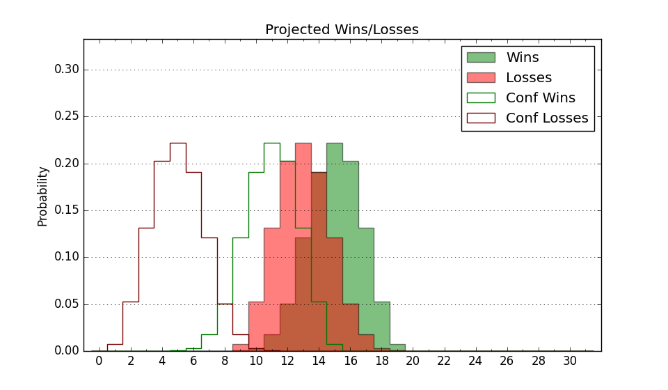

| Home | Game Probabilities | Conferences | Preseason Predictions | Odds Charts | NCAA Tournament |
| City: | Brookings, South Dakota | |
| Conference: | Summit (1st)
| |
| Record: | 3-1 (Conf) 7-9 (Overall) | |
| Ratings: | Comp.: 1.1 (153rd) Net: 1.0 (155th) Off: 108.9 (97th) Def: 108.0 (253rd) SoR: 0.0 (192nd) |
| Remaining | ||||||
|---|---|---|---|---|---|---|
| Date | Opponent | Win Prob | Pred. | |||
| 1/20 | @ South Dakota (315) | 70.9% | W 83-76 | |||
| 1/25 | UMKC (281) | 84.7% | W 81-69 | |||
| 1/27 | @ Oral Roberts (192) | 43.4% | L 79-80 | |||
| 2/1 | North Dakota St. (230) | 78.0% | W 82-73 | |||
| 2/4 | South Dakota (315) | 89.2% | W 87-72 | |||
| 2/10 | Oral Roberts (192) | 72.3% | W 83-76 | |||
| 2/15 | @ UMKC (281) | 61.9% | W 77-73 | |||
| 2/17 | @ Nebraska Omaha (251) | 54.5% | W 77-76 | |||
| 2/22 | Denver (157) | 65.6% | W 86-81 | |||
| 2/24 | St. Thomas MN (144) | 63.1% | W 73-69 | |||
| 2/29 | @ North Dakota (289) | 63.9% | W 78-74 | |||
| 3/2 | @ North Dakota St. (230) | 51.0% | W 78-77 | |||
| Previous | Game Score | |||||
| Date | Opponent | Win Prob | Result | Off | Def | Net |
| 11/6 | Akron (89) | 44.8% | L 75-81 | 2.3 | -7.3 | -5.0 |
| 11/13 | @Kansas St. (73) | 15.6% | L 68-91 | -2.6 | -9.7 | -12.3 |
| 11/19 | UCF (69) | 37.0% | L 80-83 | 14.3 | -15.2 | -0.9 |
| 11/20 | (N) George Mason (94) | 31.8% | L 71-73 | 3.8 | -4.1 | -0.3 |
| 11/22 | @Southern Miss (257) | 56.0% | W 65-54 | -4.0 | 25.0 | 21.0 |
| 12/1 | (N) Towson (162) | 51.9% | W 61-48 | -4.5 | 24.2 | 19.8 |
| 12/5 | Kent St. (183) | 70.6% | L 73-82 | -13.1 | -8.0 | -21.0 |
| 12/9 | (N) Wichita St. (154) | 50.8% | W 79-69 | 0.8 | 15.0 | 15.8 |
| 12/20 | (N) Wyoming (201) | 60.6% | L 65-78 | -23.7 | -0.2 | -23.9 |
| 12/21 | (N) Norfolk St. (206) | 61.4% | L 65-84 | -17.5 | -14.6 | -32.1 |
| 12/31 | North Dakota (289) | 85.8% | W 80-61 | 1.7 | 10.8 | 12.5 |
| 1/3 | @Weber St. (113) | 25.0% | L 73-75 | 12.0 | -1.7 | 10.3 |
| 1/6 | Montana St. (233) | 78.3% | W 89-61 | 10.5 | 13.6 | 24.1 |
| 1/11 | @St. Thomas MN (144) | 33.4% | W 81-80 | 12.9 | -0.2 | 12.7 |
| 1/13 | @Denver (157) | 35.9% | L 80-99 | 1.5 | -19.2 | -17.8 |
| 1/18 | Nebraska Omaha (251) | 80.3% | W 90-87 | 14.6 | -15.2 | -0.6 |
| Stats & Trends | |||||
|---|---|---|---|---|---|
| Current | Day | Week | Month | Season | |
| Composite | 1.1 | -0.0 | -1.4 | -1.7 | -0.9 |
| Comp Rank | 153 | -- | -19 | -15 | -16 |
| Net Efficiency | 1.0 | -0.0 | -1.6 | -2.3 | -- |
| Net Rank | 155 | -- | -15 | -9 | -- |
| Off Efficiency | 108.9 | -0.1 | +0.8 | +1.5 | -- |
| Off Rank | 97 | -4 | +4 | +10 | -- |
| Def Efficiency | 108.0 | +0.1 | -2.4 | -3.7 | -- |
| Def Rank | 253 | -1 | -38 | -63 | -- |
| SoS Rank | 147 | +1 | -29 | -90 | -- |
| Exp. Wins | 15.0 | +0.0 | -0.4 | -0.5 | -1.1 |
| Exp. Conf Wins | 11.0 | +0.0 | -0.4 | +0.3 | +0.1 |
| Conf Champ Prob | 49.0 | +1.0 | -5.4 | +10.4 | +10.4 |

| Advanced Stats | ||
|---|---|---|
| Stat | Value | Rank |
| Off Eff FG % | 0.556 | 33 |
| Off Ast Ratio | 0.152 | 108 |
| Off ORB% | 0.239 | 287 |
| Off TO Rate | 0.158 | 245 |
| Off FT Ratio | 0.314 | 216 |
| Def Eff FG % | 0.526 | 257 |
| Def Ast Ratio | 0.154 | 272 |
| Def ORB% | 0.271 | 158 |
| Def TO Rate | 0.145 | 199 |
| Def FT Ratio | 0.296 | 106 |